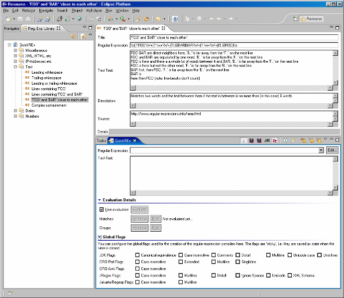

Regular Expressions are powerful but can be confusing at times. I regularly found myself working with scrapbook-pages to test my regular expressions (or working late-night shifts to fix problems in production :-( ). QuickREx was written to get around using scrapbook pages or working on the high-wire and to be able to play with regular expressions more easily.
QuickREx gives you a view in which you can enter test-texts and try regular expressions. The expressions are evaluated against the test-text on the fly, matches are highlighted and you can navigate between the matches. You can also navigate through groups within each match (if groups are defined in your regular expression).
Regular Expressions are edited either within the view or within a composition-dialog which offers the most useful building-blocks grouped in categories and accompanied by short explanations.
QuickREx also offers TAB-completion for regular expressions and conversion of regular expressions to Java-Strings (including e.g. proper escaping of the ubiquitous backslash). All TAB-completion suggestions as well as the corresponding help-text popups are customizable. They are defined in .xml-files distributed with the plug-in. These files can be changed to add additional hints, remove rarely used hints or change the descriptions.
See here for details on how to customize TAB-completion and the contents of the categories in the reg-exp-edit-dialog.
QuickREx offers the most widely used implementations of Regular Expressions in the Java-world:
For each of the implementations, you can set the available compiler-flags through QuickREx or use inline flag-switches with the regular expression (where supported).
See here for how to select an implementation.
Regular Expressions and Test-Texts can be persisted for later reference. Also, any file-contents can be loaded as test-text.
See here for screen-shots and details on using the QuickREx-view.
Version 3 adds another feature to the plugin: The Regular Expression Library. The Library it thought to be a tool to keep, organize, and search for regular expressions which you may want to use again. There are a few selected expressions for things such as checking date-formats, finding tags or searching for and matching lines in text containing 'FOO' and 'BAR' (and maybe neither 'FAR' nor 'BOO'). You can add your own books with chapters holding regular expressions useful to you.
The Regular Expression Library comes with an editor where you can enter the expression (with TAB-completion as you are used from QuickREx), enter a test-text and a description and also enter a source (you may have found the expression in a book or on a web-page). Also, you can use the QuickREx-view to test the expression against the saved test-text.
The Regular Expression Library is fully searchable, the entries are kept in XML-files (one for each book) where the path's are at your choice (apart from the standard book wich is delivered with the plugin).
See here for screen-shots and details on using the library.
Another feature I am missing from time to time when working on Wintel-boxes is the good old 'grep' command.
QuickREx also offers this feature: Load your test-text, enter or load the regular expression you want and press the 'Grep'-button. QuickREx opens a dialog containing only the matches separated by line-breaks.
This can be useful e.g. when you need to look at large log-files where you are only interested in lines starting like 'ERROR'. (Of course, you could have used Log4j and adjusted the log-level in the first place ;) )
See here for details.
As of Version 3.0.0, QuickREx supports internationalization (I18N). There is a fragment (QuickREx_I18N) with a Japanese Version - translated by Takahiro Shida - which you can install from the standard QuickREx update-site.
If you are interested in other language translations you are very welcome to provide contributions to the fragment, which is also under EPL, v 1.0. You can get the source of Version 1.0.0 here as a zip-file for download.
QuickREx is distributed under the Eclipse Public License, v 1.0. You can find the license details online at http://www.eclipse.org/legal/epl-v10.html.
The license is an Open Source license. The source can be found here as a zip-file for download.
I hope the plug-in serves you well. In case you find any problems with using it, have ideas for additional useful features or any other comments, contact me.